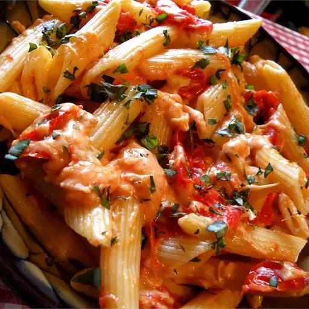

Penne With a Tomato and Basil Sauce

Penne dish with the beautiful tomato basil sauce
This penne pasta is a Mediterranean-style family staple. Use 2 tablespoons olive oil if basil oil is unavailable.
This dish should take around 45 minutes total to complete with about a 20 minute prep time. The serving size for this reciple is 4 people so there'll be enough delicious pasta for the whole family!
Ingredients
- 1 (8 ounce) package penne pasta
- 1 tablespoon basil oil
- 1 tablespoon olive oil
- 3 cloves garlic, minced
- 1 pint grape tomatoes, halved
- 1 cup shredded pepper Jack cheese
- 1 cup shredded mozzarella cheese
- ¼ cup grated Parmesan cheese
- 1 tablespoon minced fresh basil
Steps
Cook the Pasta
- Bring a large pot of water to a rolling boil over high heat.
- Cook pasta in boiling water until cooked through but still firm to the bite, about 10 minutes.
- Drain and set aside.
Make the sauce
- Heat both oils in a large skillet over medium-high heat.
- Add garlic and cook until soft, 1 to 2 minutes.
- Add tomatoes, reduce heat to medium, and simmer for 10 minutes.
- Stir in pepper Jack, mozzarella, and Parmesan cheese
- When cheese begins to melt, mix in cooked penne pasta.
- Season with fresh basil and serve!